The first edition of the book claimed more than one hundred recovered members. The real roll was about forty. Here is the exact, buried machinery of how it actually began.
A field guide to Alcoholics Anonymous /45 deep cuts/ 20 min read
The count
The roll, and the real start
Start with the number on the cover, because it was not true.
No. 01
The book said a hundred. There were about forty.
When Alcoholics Anonymous went to press in April 1939, its foreword announced "more than one hundred men and women who have recovered." The best reconstruction of the actual roll: 74 people had ever passed through the two groups, and roughly 41 were sober. Bill Wilson, years later, dropped the salesmanship and just said "about 40." the roll
No. 02
"One Hundred Men" was the title, until a woman wrote a chapter.
The working title for the book was One Hundred Men. It had to be thrown out for a simple reason: one of the personal stories was a woman's. The runner-up, The Way Out, lost too, after a check at the Library of Congress found at least a dozen books already using it and none at all called Alcoholics Anonymous.
No. 03
AA exists because a hostile takeover failed.
Bill Wilson was in Akron in May 1935 to win a proxy fight for a rubber-machinery company. He lost, and found himself broke and alone in the lobby of the Mayflower Hotel, one end of the corridor leading to the bar and the other to a church directory and a payphone. He worked the phone instead, looking for another drunk to talk to, and reached Dr. Bob through it. The whole fellowship turns on which way he walked.
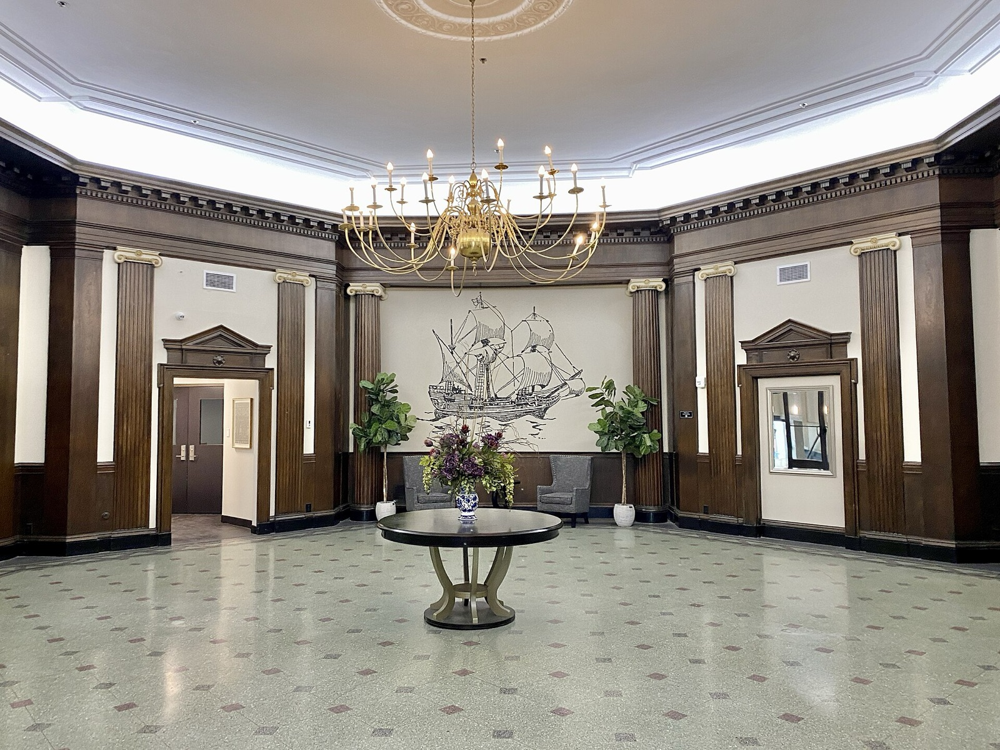
The Mayflower lobby in Akron, where Bill Wilson chose the church directory over the bar in May 1935.
The founding vision arrived during a belladonna delirium.
Bill's famous white-light experience, the spiritual jolt the whole program traces back to, came in December 1934 at Towns Hospital, while he was being dosed around the clock with belladonna and henbane, two deadly nightshades. Whether the light was God or the pharmacology is still openly argued, including by AA's own historians. Bill always insisted it was real.
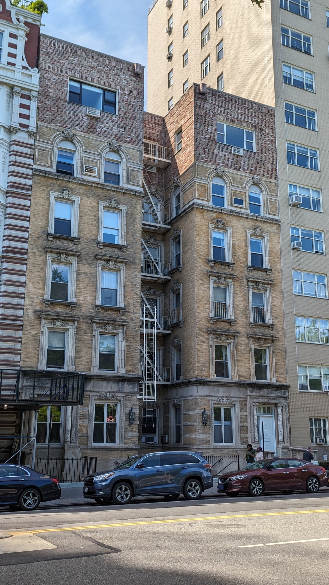
The former Towns Hospital on Central Park West, where the vision happened in a belladonna ward.
June 10, 1935, the date of Dr. Bob's last drink, is the fellowship's birthday. But the medical convention Dr. Bob drank his way through that week did not even open until June 10, which puts his real final beer closer to June 17. The most celebrated date in AA is a best guess.
No. 06
Four years made the first hundred. Two more made six thousand.
It took from 1935 to 1939 to produce about a hundred sober members across three cities. Then a single Saturday Evening Post article in March 1941 set the curve on fire, and the fellowship roughly quadrupled in ten months, to six or eight thousand by the end of that year. growth
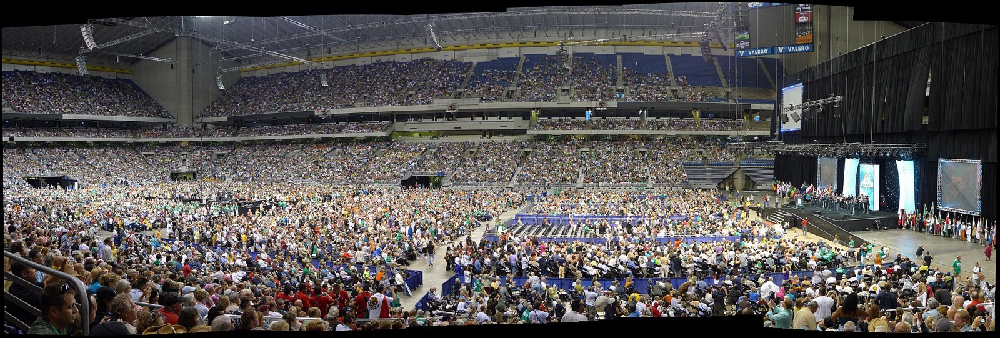
The opening of one AA convention, San Antonio, 2010. Forty people once. More than fifty thousand in this room alone.
The membership table still opens with "1935: two members."
AA's headquarters keeps a running census, and the very first row reads "1935: 2 members, 0 groups," backdated to Bill and Bob themselves. The same table peaks at 2,138,201 members in 129,790 groups in 2020. It is the only census on earth that begins with two named men.
The big book
The book itself
Nine decades, and the whole approved library fits on one short shelf.
No. 08
In ninety years, AA has approved exactly eleven books.
The General Service Conference has put its stamp on eleven full-length books, from the Big Book in 1939 to a volume of Bill's talks in 2019. Everything else AA publishes, the great bulk of its paper, is pamphlets, around sixty of them. The "Conference-approved" label itself only goes back to 1951. approved
No. 09
Bill Wilson wrote three of them.
Three of the eleven are genuinely his: the Big Book, the Twelve Steps and Twelve Traditions (1953), and Alcoholics Anonymous Comes of Age (1957). Three more are anthologies of his own words, assembled by other hands. The rest, including both official biographies and the daily meditation book, were written by other members or by anonymous committee. Even the Twelve and Twelve was not a solo act: Bill wrote it with two paid editors at his elbow. the 12 and 12
No. 10
He wrote all of the first 164 pages but two chapters.
The famous front half of the Big Book is Bill's, with two exceptions. "The Doctor's Opinion" was a letter from Dr. William Silkworth, and "To Employers" was written by Hank Parkhurst. The personal stories filling the back third were written by the members themselves. The copyright names Bill as sole author, but he admitted he had become "much more of an umpire than an author." who wrote what
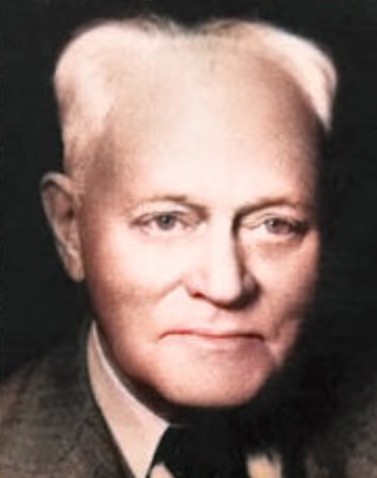
Dr. William Silkworth, whose letter of support became "The Doctor's Opinion," one of the two front chapters Bill did not write.
Lois wanted to write the chapter to the wives. Bill took it.
The chapter addressed to the wives of alcoholics was offered first to Dr. Bob's wife Anne, who declined, and then claimed by Bill, over the wishes of his own wife, who had lived every line of it. Asked about it decades later, Lois answered without softening it: "Bill wrote it, and I was mad." to wives
No. 12
The hundred drunks fighting over every word never happened.
The romantic image is the whole membership battling over the text in meetings. The archival historian William Schaberg checked the record and put it flatly: "blood on the floor... it didn't happen in meetings; it did happen in a New Jersey office." The real editing was a handful of men in Hank Parkhurst's Newark office. A wider circle of about four hundred did get to weigh in, by mail: mimeographed loan copies went out to members, doctors, clergy, and judges for comment before the book was set. Schaberg
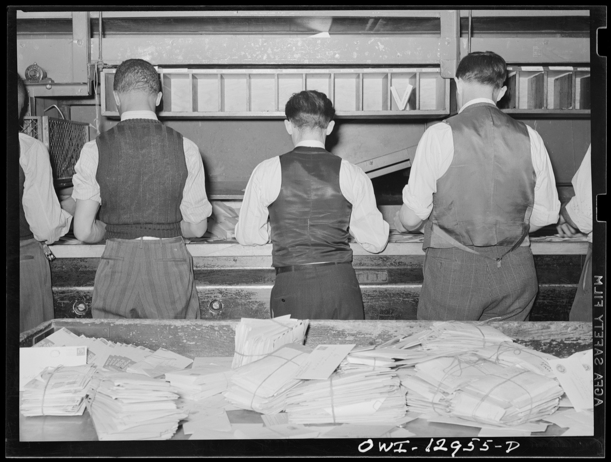
The mail was the nervous system of early AA: draft chapters, loan copies, and later the floods of pleas for help all moved by post.
Sorting the mail, 1938. Arthur Rothstein, Farm Security Administration, Library of Congress, public domain.
No. 13
"God as we understood Him" was the unbelievers' victory.
The phrase that lets an atheist stay in the room was the price of peace with the New York agnostics, usually credited to a former salesman named Jim Burwell. In the same compromise, the Seventh Step lost the words "on our knees." The book's most famous opening to non-believers was won by its non-believers.
No. 14
It is called the Big Book because of the paper.
Nothing about its length earned the nickname. The first printer ran it on the thickest stock in the shop, so that a $3.50 book in 1939 would feel hefty enough to be worth the money. The first run was 4,730 copies. The name is a printing decision, not a compliment.
No. 15
AA forgot to renew the copyright.
Through a clerical lapse, the first edition's United States copyright was never renewed, and the original text has been in the public domain since 1967. AA still maintains it controls the book everywhere else on earth, and has fought to keep doing so.
No. 16
The marked-up 1939 manuscript sold for $2.4 million.
The typed printer's copy of the Big Book, the handwritten edits still on its pages, sold at auction in 2018 to the owner of the Indianapolis Colts. AA's publishing arm sued to stop the sale, then settled by signing away any and all claims to it.
No. 17
The book now exists in more than seventy languages.
From a first run of under five thousand, the basic text has been carried into seventy-plus languages. One of them, Navajo, has no written form for it: the translation took four years and was issued as a spoken fourteen-disc recording, sold out of its first run of eight hundred sets.
The Big Book in Hebrew. The cover is the same plain promise in every alphabet it reaches.
Before there was a book, there was a house, a hospital bed, and a set of rules nobody wrote down.
No. 18
When it was forty people, Akron met in a living room on Wednesday nights.
There was no clubhouse and no book. From 1935 to 1939 the Akron group met every Wednesday in the living room of T. Henry and Clarace Williams, at 676 Palisades Drive, inside an Oxford Group meeting where the alcoholics were a minority bloc. When that grew impossible the meeting moved to Dr. Bob's own house, which once held 74 people in one night. the sites
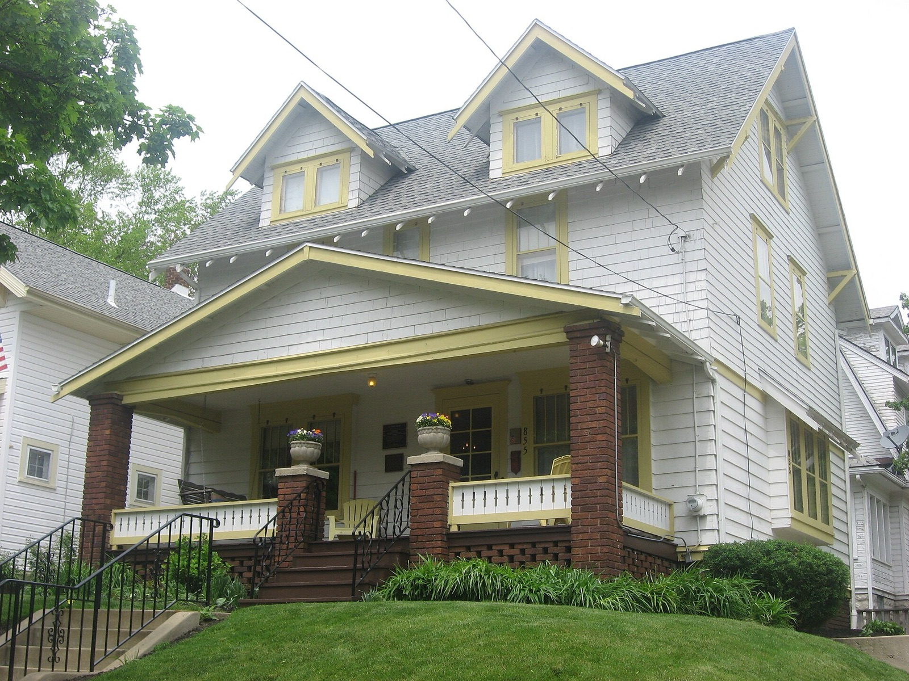
Dr. Bob's house at 855 Ardmore Avenue. For a stretch in early 1940 the whole Akron meeting crammed inside it.
Every Monday the most surrendered members held a "set-up meeting," sitting in silence with pads and pencils to write down the name God gave them for who should lead on Wednesday. One member marveled that they nearly always wrote the same name.
No. 20
You could not attend until you had knelt.
A newcomer was taken to an upstairs bedroom and made to kneel and surrender out loud before he was allowed into a meeting at all. The wives waited downstairs. One of them remembered the door opening and "down would come the new man, shaking, white, serious, and grim."
No. 21
The weekly meeting was rated "important, but not vital."
A 1938 fact-finding memo, the only contemporary written description of the program, ranked the meeting itself as merely important. The truly mandatory part was a daily morning quiet time, skipped at "grave danger of backsliding." The thing AA is now built around was once the optional part.
No. 22
New York met on Tuesdays, in the Wilsons' front room.
The other founding group met at 182 Clinton Street in Brooklyn, about fifteen people counting families, looser and far less scriptural than Akron. Drunks boarded in the house and were sometimes drunk in it; Bill called it a boiler factory, "from which practically no one issued sober, but we had a pile of experience."
No. 23
The front door was a hospital bed.
In Akron, getting in meant five to eight days in a hospital room with nothing to read but a Bible, visited two or three at a time by recovered drinkers a sponsor had summoned with twenty or thirty phone calls. The visits, a manual explained, were the medicine.
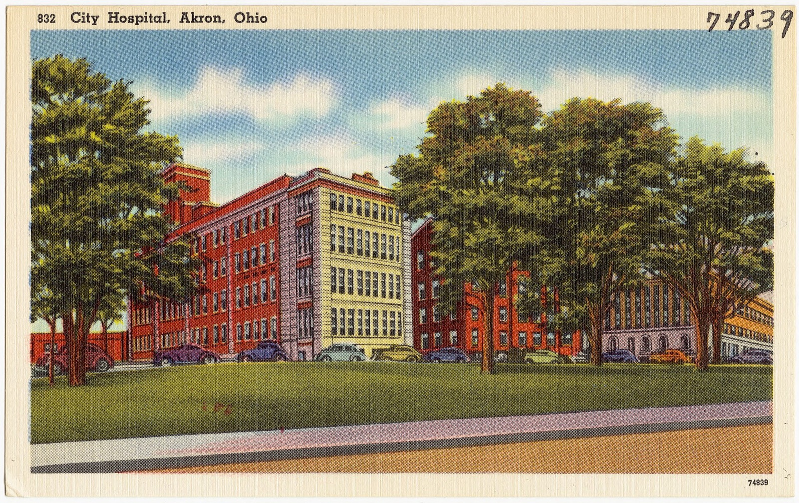
Akron City Hospital, where Bill Dotson, AA number three, sobered up in a bed in June 1935.
Sister Ignatia gave every alcoholic leaving St. Thomas Hospital in Akron a Sacred Heart badge, on one condition: if he ever decided to drink, he had to come back and hand it to her first. The chip handed out for years of sobriety descends directly from that small contract. Ignatia
No. 25
"Hi, I'm an alcoholic" has no early paper trail.
Nobody can document the ritual greeting at any meeting before the mid-1940s; AA's own archives say the earliest member memory of hearing it dates to about 1945. The Akron old-timers found the later custom of reciting your drinking history strange. As one put it, they did not think it was anybody's business. the phrase
No. 26
The Serenity Prayer came out of a newspaper obituary.
A member spotted the lines in a June 1941 death notice in the New York Herald Tribune. Within weeks the office had them printed on wallet cards, known at first simply as the "God Grant Me" cards. The most quoted prayer in recovery entered AA off the obituary page. the prayer
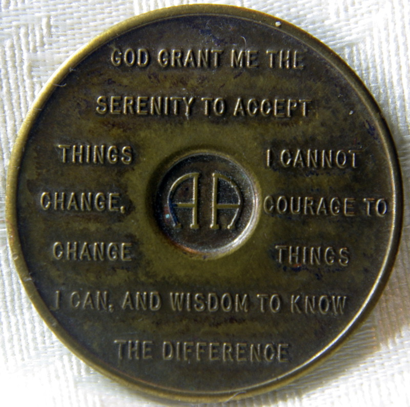
A modern sobriety medallion, the prayer engraved on the back. Two customs, the chip and the prayer, both improvised in the early years, fused onto one coin.
A movement built on anonymity barely sat for the camera. Here, gathered, is the founding generation.
No. 27
The founders left a thin public record on purpose.
This is why you will not find most of these people on Wikipedia or in the photo archives: the anonymity tradition kept them out of the mainstream record, and their portraits survive mainly because the recovery-history community held onto them. Here is the founding generation, the real faces behind the number forty.
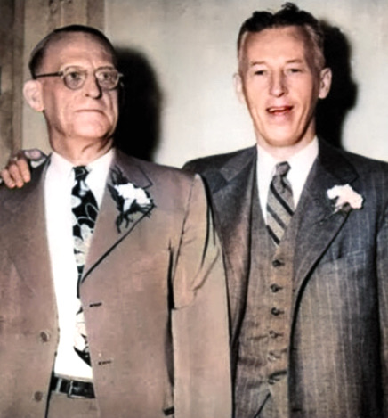
The two founders: Dr. Bob Smith, left, and Bill Wilson. The warm cast on these portraits is later colorizing of black-and-white originals.
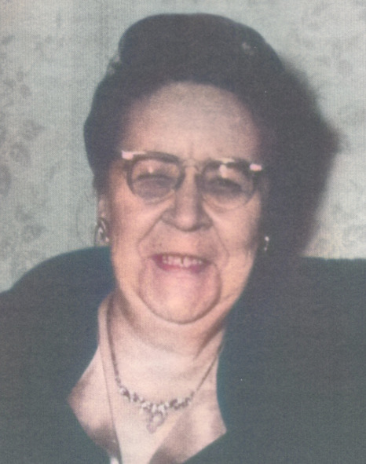
Anne SmithDr. Bob's wife. Ran the morning quiet time and worked the phones.
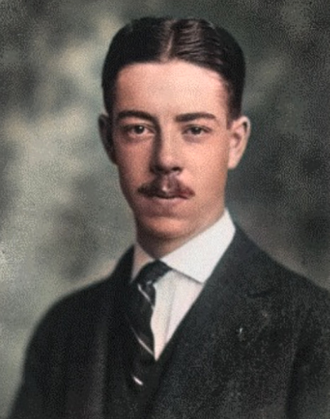
Ebby ThacherCarried the message to Bill, then relapsed for thirty years.
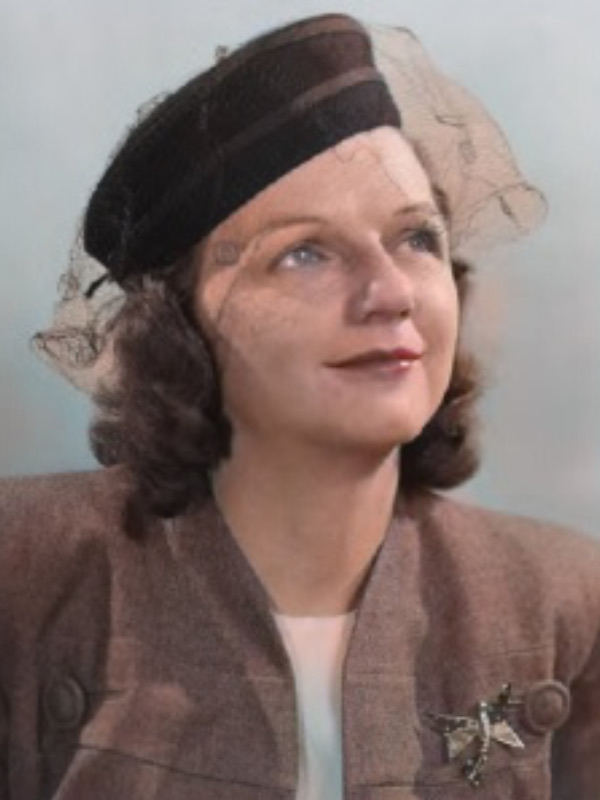
Ruth HockTyped the whole Big Book for stock instead of salary.
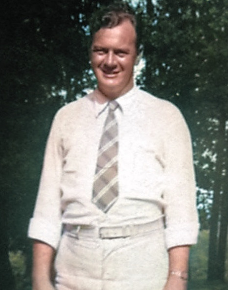
Hank ParkhurstGot the book published, then drank and sold his stake for $200.
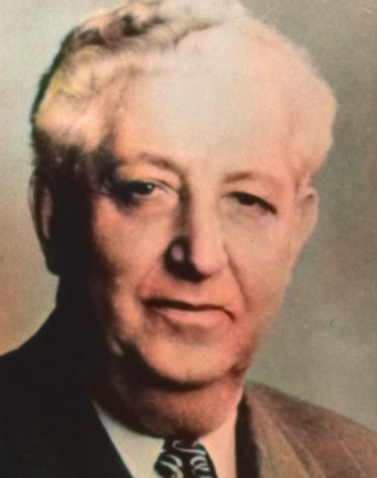
Bill DotsonAA number three, the man on the bed. Sober July 4, 1935.
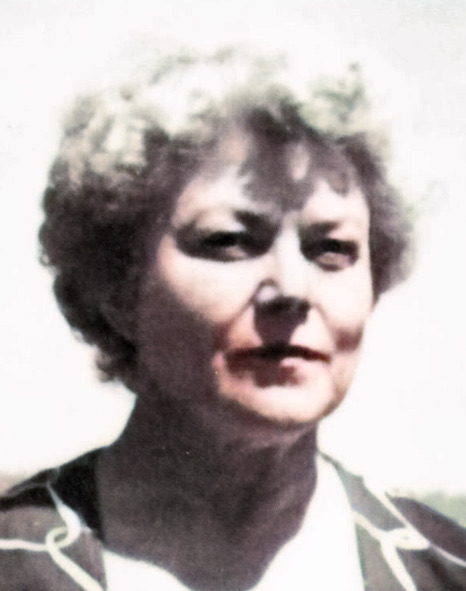
Henrietta SeiberlingThe nonalcoholic who put Bill and Dr. Bob in one room.
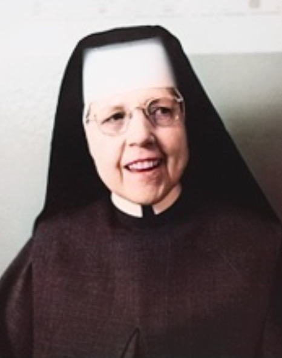
Sister IgnatiaGave out the badge that became the sobriety chip.
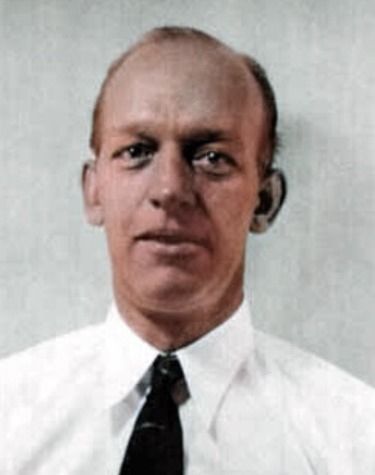
Clarence SnyderHeld the first meeting ever called Alcoholics Anonymous.
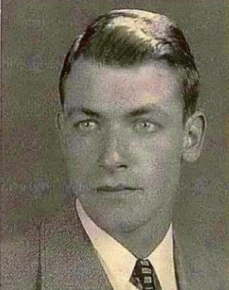
Fitz MayoFought for an openly Christian book. Identified Florence's body.
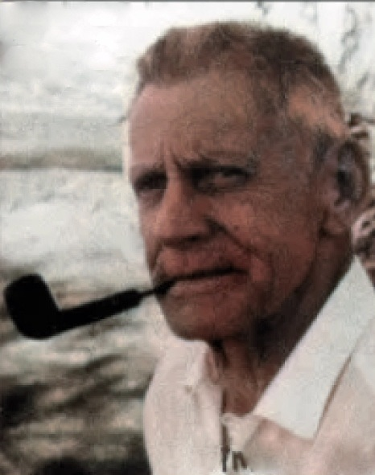
Jim BurwellThe house atheist who won "as we understood Him."
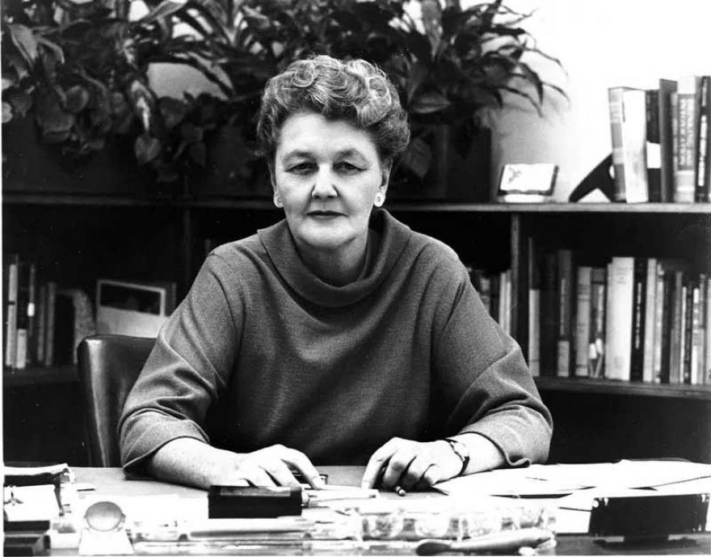
Marty MannThe first woman to keep her sobriety for good.
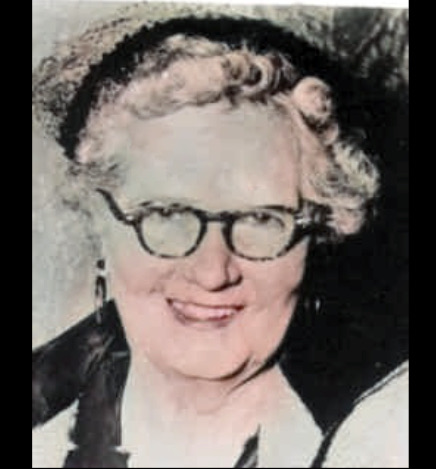
Ethel MacyAkron's first lasting woman: "That's what I'm here for."
Founder and pioneer portraits via storiesofrecovery.org (Marty Mann via NCADD), reproduced from the early-AA photographic record.
No. 28
The houses all survived as museums.
What the founders did not leave in photographs they left in real estate. The Vermont inn where Bill was born, Dr. Bob's home in Akron, the Gate Lodge where Henrietta staged their first meeting, and Stepping Stones, the Katonah house where Lois ran Al-Anon from an upstairs desk, are all preserved and open to visitors.
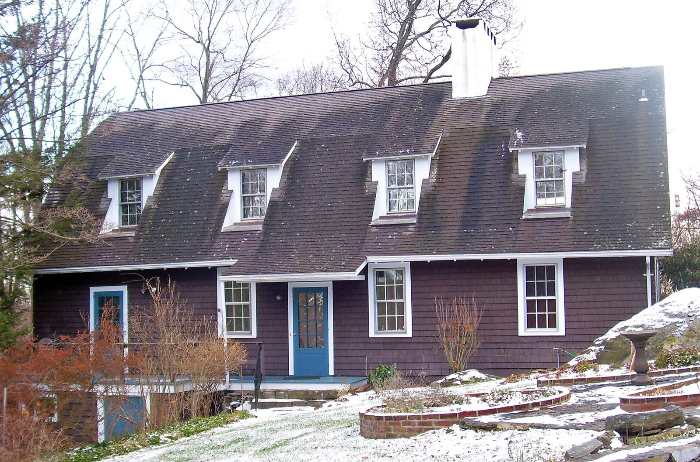
Stepping Stones, the Wilsons' home from 1941 to 1971, now a museum and archive.
Bill's headstone in East Dorset, Vermont gives only his name and dates. Dr. Bob and Anne Smith's modest stone in Akron is the same. Neither says a word about the fellowship the two men built. The only thing that marks them is the sobriety chips strangers leave on top.
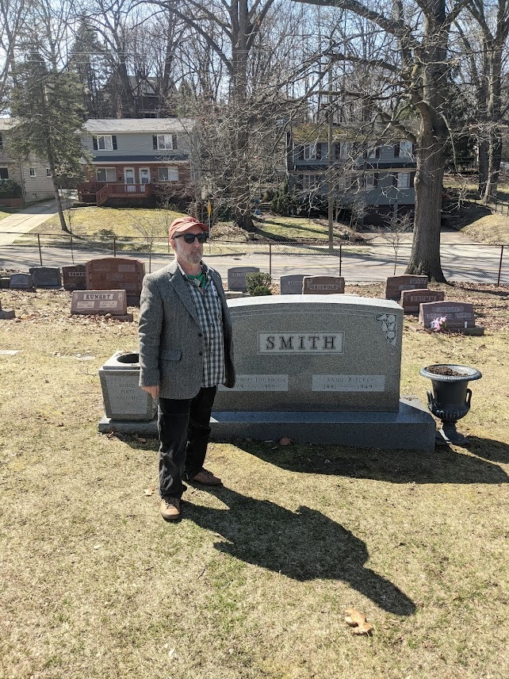
Dr. Bob and Anne Smith's grave in Akron. Like Bill's, it leaves AA unmentioned.
Florence Rankin was the first woman to get sober in AA and the only woman in the first edition; her story was titled "A Feminine Victory." She drank again, moved to Washington, and was found dead, and Fitz Mayo (above) had to identify the body. Of the whole early cast she is the one face still missing: no photograph of her is known to exist. Her death hardened a folklore that the program did not work for women, which Marty Mann then spent a sober lifetime dismantling. Even "first woman to stay sober" is contested, since Mann herself had an early slip. the first woman
The institution
The money and the machine
The strangest thing about the institution is how hard it works to give its own power away.
No. 31
Rockefeller gave a tenth of what they asked, on purpose.
Asked for $50,000 to bankroll the young fellowship, John D. Rockefeller Jr. gave $5,000 and explained the cut: "I am afraid that money will spoil this thing." His instinct became permanent policy. AA has been refusing big money ever since.
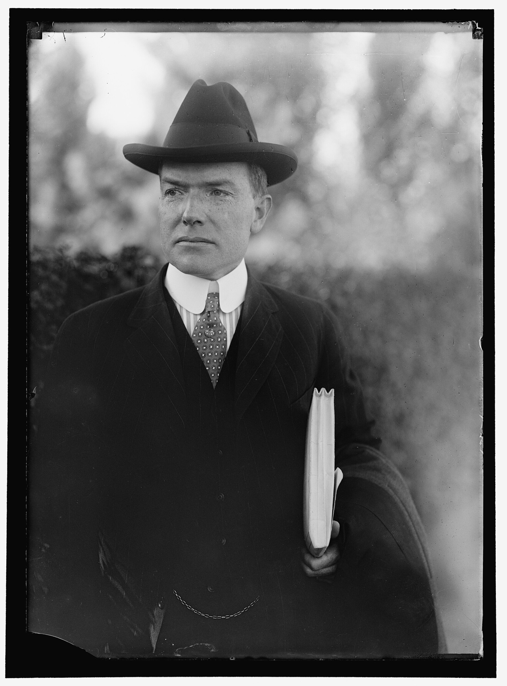
John D. Rockefeller Jr., 1917. The richest backer AA ever had decided, deliberately, to give it very little.
A national radio broadcast produced two book orders.
To sell the new Big Book, the group put a pitch on the We the People radio show and mailed 20,000 postcards to doctors. The return was twelve reply cards, ten of them illegible, and exactly two orders. The morning after the broadcast, the Wilsons were foreclosed out of their Brooklyn house.
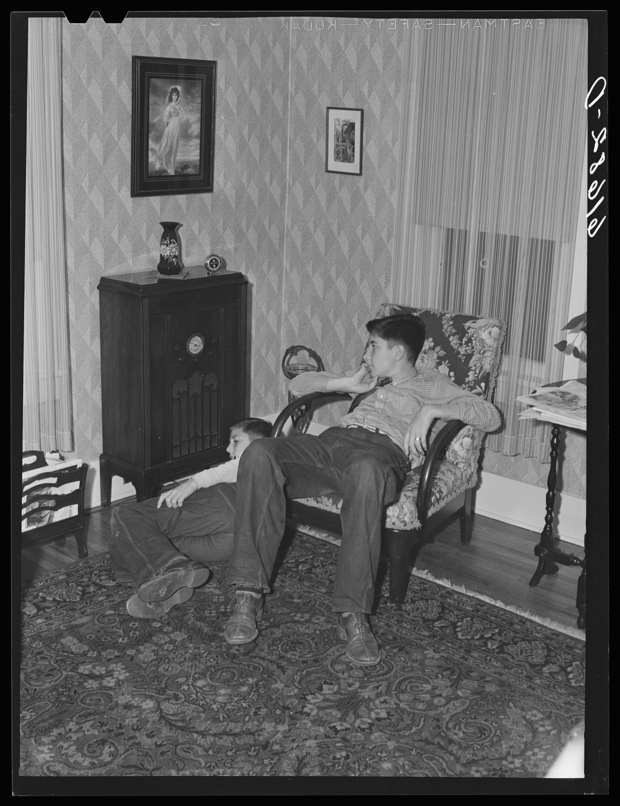
A console radio, 1940, the kind the AA pitch went out on. The medium was national. The result was two books.
No member may donate more than $7,500 in a year, or leave more than $12,500 in a will, and the office mails back any check from someone who is not a member at all. It is an organization that turns away money on principle, the long shadow of Rockefeller's warning.
No. 34
It let its own trademark die.
After roughly two hundred cease-and-desist letters and a revolt by the medallion makers who stamp the chips, AA stopped defending its circle-and-triangle symbol in 1993, and the 1994 conference stripped it from the literature. The fellowship gave away its own logo rather than fight its own members over it.
No. 35
The first meeting called "Alcoholics Anonymous" was broken up by AA.
In May 1939 the Cleveland members split off and held the first meeting ever to use the name Alcoholics Anonymous. The Akron group they had left came over to break it up. One Cleveland pioneer's verdict on the whole launch: "A.A. started and grew in riots."
No. 36
Dr. Bob treated five thousand alcoholics and never charged a cent.
Between 1939 and 1950, working alongside Sister Ignatia at St. Thomas Hospital in Akron, Dr. Bob detoxed roughly 5,000 people and took no fee from any of them. Ignatia's own lifetime total, counting her later years in Cleveland, runs to about 15,000.
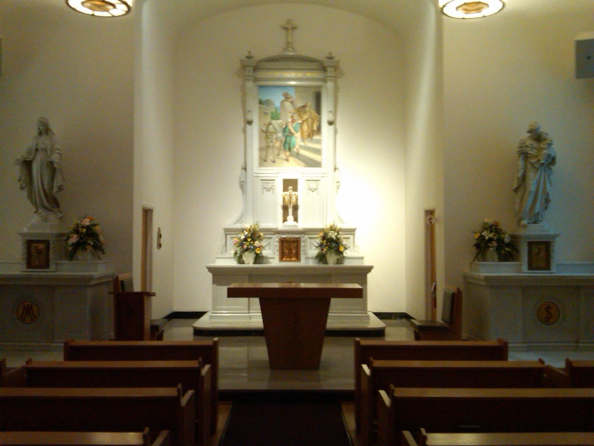
The chapel at St. Thomas Hospital in Akron, where Dr. Bob and Sister Ignatia ran the first alcoholic ward in the country.
In 2025 the volunteers censured the board that owns everything.
AA is governed as an upside-down pyramid: a board legally holds the copyrights and the money but answers to a conference of volunteer delegates. In 2025 that conference formally censured the board for "harassment, intimidation, and bullying," and because the structure has no head, there was no higher authority to settle the fight.
After
Strange late Bill
The co-founder stayed sober to the end. Almost everything else about his last years is stranger than the legend allows.
No. 38
He spent eleven years in a depression, writing through it.
From roughly 1944 to 1955 the co-founder of AA was sunk in recurring depression. On some mornings he wrote the Twelve Steps and Twelve Traditions, the book that codified the program, with his head down on the desk, weeping.
No. 39
He took LSD, and believed it could sober people up.
In 1956 Bill took LSD under a doctor's supervision and came away convinced it could trigger the kind of spiritual opening that got drinkers sober. He kept at it for years; the circle around the experiments included his wife, two priests, Marty Mann, and his mistress. In one letter he called the drug "about as harmless as aspirin."
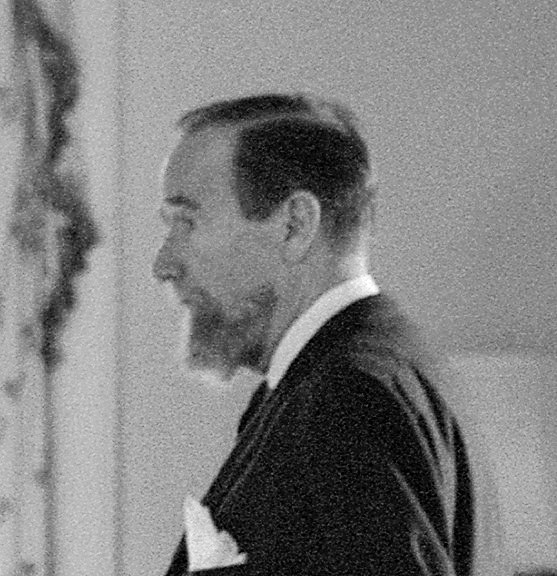
Gerald Heard, who guided Bill's first LSD session in 1956. He is one of the few in that circle with a free photograph.
He ran a vitamin crusade out of AA's headquarters.
Late in life Bill became an evangelist for niacin, took 3,000 milligrams a day, and ran an informal trial on thirty AA friends. The 1967 conference made him move the operation out of the General Service Office and strip its address from his stationery. Insiders called it the great niacin flap.
No. 41
He reported that a dead monk was helping him write.
In a 1952 letter to his Jesuit adviser, Bill wrote that a monk named Boniface was assisting him with the Twelve and Twelve from the spirit world. He and Lois held seances at home, in a room their circle called the spook room.
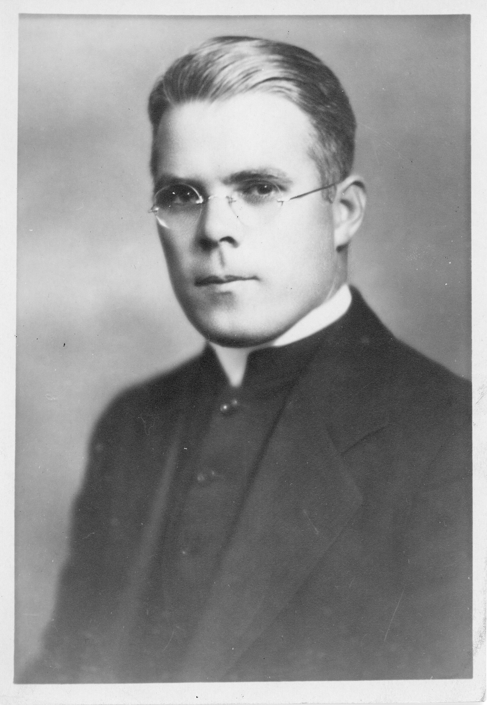
Father Ed Dowling, the Jesuit who became Bill's spiritual sponsor in 1940 and fielded his strangest letters.
Father Ed Dowling, S.J. Released under CC0, courtesy Maryville University Archives, via Wikimedia Commons.
No. 42
He turned down a Yale degree, then admitted he wanted it.
Citing the anonymity tradition, Bill refused an honorary doctorate from Yale and a Time cover that would have shown only the back of his head. Years later he came clean: "I'm not so damn noble as you suppose. In reality, I rather wanted that degree."
No. 43
Dying, he asked four times for whiskey.
In his last weeks the founder of AA asked his nurses for whiskey on four occasions between Christmas 1970 and the middle of January 1971, starting with three shots at ten past six on Christmas morning. He was refused every time, and once swung at a nurse. He had been sober more than thirty-six years.
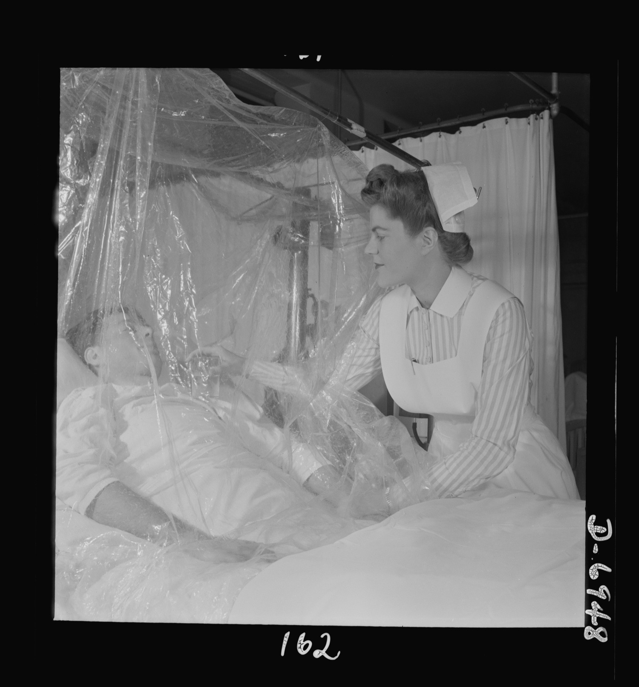
A hospital oxygen tent, 1942. Bill died of emphysema in 1971, the same disease that killed the man who first carried him the message.
He died on his wedding anniversary, fifty-three years on.
Bill Wilson died on January 24, 1971, exactly fifty-three years to the day after he married Lois. The New York Times put his full name on the front page, undoing the anonymity at last, by his own signed permission given years before.
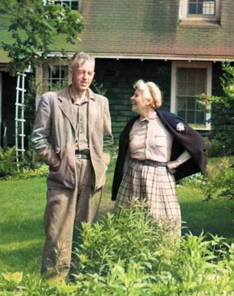
Bill and Lois Wilson, married fifty-three years to the day before he died. She outlived him by seventeen years and built Al-Anon.
The stone in East Dorset reads WILLIAM G. WILSON, 1895 to 1971, and nothing else. People who never met him leave sobriety chips along the top edge. It is the closest thing the most influential figure in the history of addiction has to a monument, and it does not say what he did.
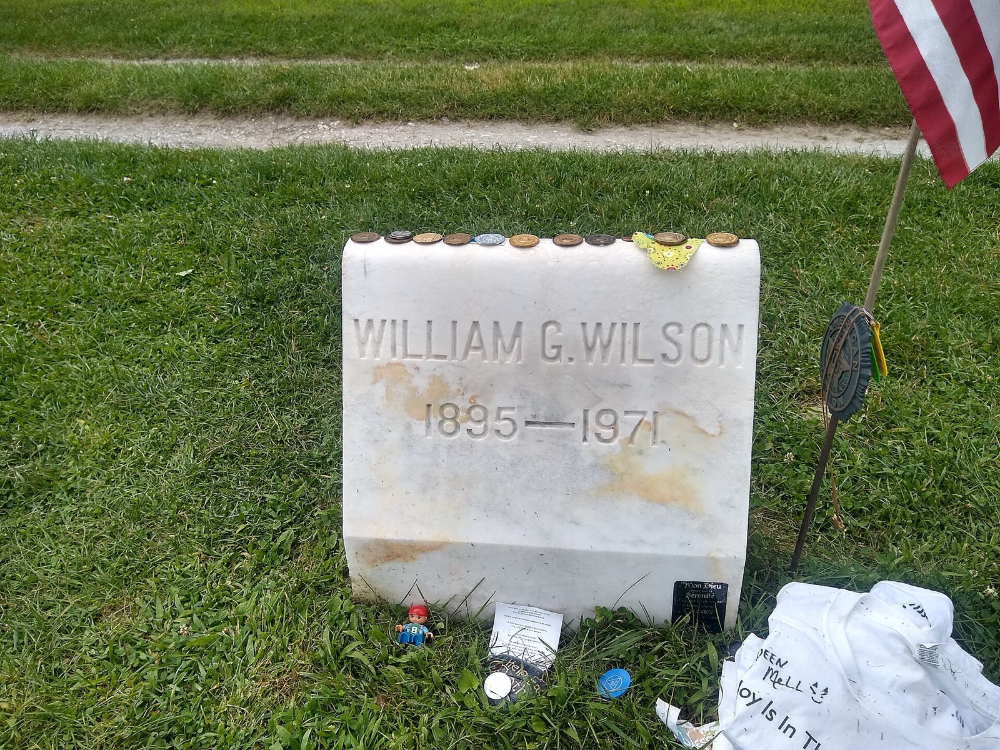
The grave in East Dorset, Vermont. Forty people once, more than two million now, and the stone keeps the anonymity to the end.
Every figure here is drawn from a 150,000-word research dossier compiled for this piece, and the load-bearing numbers, the eleven approved books, the count of about forty, the two chapters Bill did not write, were re-verified against the sources below. The dossier is deliberately light on verification in places, and the genuinely disputed points are left visible in the text rather than smoothed over: the date of Dr. Bob's last drink, whether Bill's vision was grace or belladonna, how Florence Rankin died, and who was truly the first woman to keep her sobriety. Photographs of the places, the era, and the graves are public domain or Creative Commons. The portraits of the founders and early members come from the recovery-history community, chiefly storiesofrecovery.org, which has preserved images the mainstream archives never carried; my own searches turned up no free portrait of any founder, which is why these faces are so rarely seen.
The working source list, grouped by section
solid primary or strong consensusgood reliable secondarycontested genuinely debated, flagged in text
The count, and the book
solidAlcoholics Anonymous. The start and growth of A.A. (the first hundred in four years, the 1941 surge). aa.org
solidAlcoholics Anonymous. What does "Conference-approved" mean (the label, in use since the first Conference of 1951). aa.org
solidSchaberg WH (2019). Writing the Big Book, via The Fix interview (the Newark office, the real editorial circle, "it didn't happen in meetings"). thefix.com
goodArthur S. Big Book History and Myths (chapter authorship: Silkworth's "Doctor's Opinion," Parkhurst's "To Employers"). prestongroup.org
goodAA Agnostica. Why Bill W. wrote the 12 Steps twice (Tom Powers and Betty Love as paid collaborators on the 12 and 12). aaagnostica.org
good"Who wrote To Wives?" (Anne Smith declined, Lois wanted it, "Bill wrote it, and I was mad"). historical tidbit
goodAA Shropshire. Big Book study notes (74 people through the groups by 1939, about 41 sober). aashropshire.org
The rooms before the book
solidAlcoholics Anonymous (1980). Dr. Bob and the Good Oldtimers (the Monday set-up meeting, the kneeling surrender, the hospital front door, the early head counts). full text
solidAkron Area Intergroup. Historic Sites (676 Palisades Drive, 855 Ardmore Avenue, and the early addresses). akronaa.org
solidAlcoholics Anonymous. Sister Ignatia (the Sacred Heart badge returned before a drink, ancestor of the chip). aa.org
solidAlcoholics Anonymous (SMF-129). Origin of the Serenity Prayer (the 1941 newspaper notice, the "God Grant Me" cards). aa.org
goodAA Cleveland. "My name is... and I'm an alcoholic" (the missing early paper trail for the greeting). aacle.org
The faces, and the women
contestedMichelle McClellan. Who was the first woman in Alcoholics Anonymous (Florence Rankin, and the disputed death and "first" claims). pointshistory.org
goodAA Agnostica. Marty Mann and the early women of AA (Mann's early slip; Sylvia Kauffmann as a rival "first"). aaagnostica.org
goodstoriesofrecovery.org. The photographic record of the founders and early members (New York, Akron, and other regions), the source for the portrait gallery here. storiesofrecovery.org
The machine, and late Bill
goodHistory of Alcoholics Anonymous. Rockefeller's $5,000, the Cleveland split of 1939, the upside-down service structure. Wikipedia. wikipedia.org
goodWilliam Wilson. Life, the LSD experiments, the niacin campaign, the deathbed log, the front-page unmasking. Wikipedia. wikipedia.org
goodDon Lattin (2012). Distilled Spirits, on Bill Wilson, Gerald Heard, and Aldous Huxley and the LSD circle. overview
solidAlcoholics Anonymous. Self-support and the Seventh Tradition (the donation caps, the returned outside money). aa.org
The full dossier runs to nineteen files and roughly 835 cited sources, with the most-quoted facts starred and the thin spots marked. It is the spine behind every entry above.
{kind=link}
.jpg){kind=link}
{kind=link}
{kind=link}
.jpg){kind=link}
.jpg){kind=link}
{kind=link}
{kind=link}
{kind=link}
{kind=link}
{kind=link}
{kind=link}